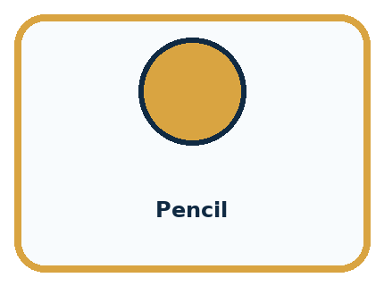
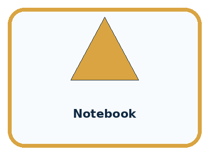
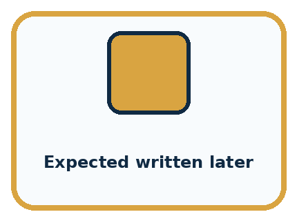
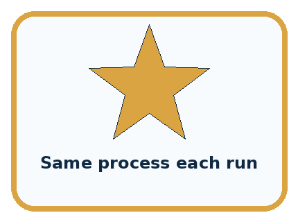

AI Academy · Level 1 · Grade 6 · Week 33 · Student lesson
Test Normal Cases
Learn to understand, design, build, test and explain AI systems responsibly.
Project: Helpful Classroom Sorter
THE CONNECTED WEEK
Write expectations. Keep every result. Report the full set.
Compare a fixed activity prototype and baseline, inspect a supplied failure and explain the limits of routine coverage.
Keep one habit: Precommit the checks → record actual runs → count full passes without deleting failures.
Main lesson · Section 1
What counts as a full pass?
Fix the version and judging rules before comparing methods.
Start with a misleading success
Write the required result before running a test, then keep every observed result. A right label with a false explanation is not a full pass under this project’s contract.
Recall expected versus observed results
How does an expected result differ from an observed result, and why keep both when they disagree?
Close your notes first. A rough first answer helps us choose the right starting point; it is not a score for your ability.
After trying, check the relevant lesson or ask your teacher. Change the part of your explanation that the evidence shows was wrong.
Your learning goals
I can plan routine cases with expected results derived from the requirements.
I can compare a fixed prototype and manual baseline on the same requests.
I can report every result and explain what a small test set cannot establish.
Earlier wording, alternatives and picture transcripts
Your learning target
Remember before reading
Without opening the old lesson, explain one key idea from Build a Paper Prototype. Give an example and a mistake that the idea helps you avoid.
Without opening the old lesson, explain one key idea from Choose Inputs and Outputs. Give an example and a mistake that the idea helps you avoid.
Without opening the old lesson, explain one key idea from Verify Important Outputs. Give an example and a mistake that the idea helps you avoid.
Repeated success on ordinary cases is necessary but not sufficient.

LEARNING TARGET A sorter passes five routine cases and fails one. A team removes the failure as 'unusual' and reports 100%. Correct the report and propose a next test.
Learner name:
Readiness for the connected explanation
This week’s end goal
By the end, I can test routine cases against expectations and count full passes honestly.
Main lesson · Section 2
Test the unchanged activity prototype fairly
Use catalogue B version 1 and the same contract for P1 and the manual baseline.
Turn demonstrations into an inspectable test record
This week you will turn separate paper traces into a test record. Choose several ordinary requests, write the required answers first, then run the same saved prototype on every request.
Testing is useful when it can reveal a mistake, so keep failures as carefully as successes. A demonstration chosen because it works is not a complete evaluation.
Read the complete catalogue and requirements
Use catalogue B version 1 in order: B1 Bookmark drawing, 10 minutes, quiet Yes; B2 Story circle, 8 minutes, quiet No; B3 Pattern puzzle, 12 minutes, quiet Yes; B4 Tower challenge, 15 minutes, quiet No.
These fictional values assume materials are available. Inputs are whole minutes from 0 to 30 and Quiet required Yes or No. Time must fit AND either quiet is not required or the activity is quiet. No allows either kind.
Select the first fit with a correct reason; otherwise report no match. Missing or invalid input requires clarification. No booking or publishing takes place.
Keep both methods and reset rules explicit
Keep the P1 version 1 instructions from Week 32: validate and stop with clarification if input is invalid; otherwise start at B1, check both conditions, suggest the first passing row and stop.
After a failure advance one row; report no match only after all rows fail. Reset to validation and B1 for each new valid request. The manual baseline marks every row against both conditions and selects the first fit.
Both methods must follow the same contract.
Earlier wording, alternatives and picture transcripts
PICTURE STORY
Look Closely Before You Explain
Pictures give clues; evidence tells us what the clues mean.

MYSTERY The sorter is tested on five common classroom items with expected bins written before each run.
What do you notice?
Name three visible details without explaining them yet.
Circle the detail most connected to the system's decision.
Name one detail that may be decoration or distraction.
Make a first prediction and state the clue that supports it.
My observations, prediction, and evidence:
GOOD THINKING A prediction can change when stronger evidence appears.
A closer explanation
Main lesson · Section 3
Prepare the four-case routine set before running it
Choose cases for what they reveal and record both outputs and explanations.
Inspect the test-record structure
From a planned case to evidence
Define labels, trace references and a full pass
Give each case an ID. Record its exact input, purpose, expected output and expected explanation before running it. Then add observed output, observed explanation, pass or fail, and a trace reference.
Put the prototype version, catalogue version and baseline method at the top of the sheet.
A pass needs the correct result and a reason supported by the checked conditions; the right activity with a false reason is not a full pass.
Read R1–R4 and each case’s purpose
Our routine set R contains four valid requests. R1 is 11 minutes Yes, checking an early quiet match. R2 is 9 minutes No, checking that the search reaches a later fitting row.
R3 is 6 minutes No, checking that a valid request can exhaust the list. R4 is 9 minutes Yes, checking that a time fit alone is insufficient. These cases do not cover every accepted input or validation error.
Explain the test process
Point to the input, the deciding step and the result in this week’s visual. Explain the same step in ordinary words. A picture helps when you can say what each part represents.
Earlier wording, alternatives and picture transcripts
VISUAL MECHANISM
Input → Process → Output
Follow the information instead of imagining magic inside the machine.


INPUT planned test input and expected result
PROCESS run unchanged prototype and observe
OUTPUT actual result, pass/fail, and notes
CORE IDEA Repeated success on ordinary cases is necessary but not sufficient.
UNDER THE HOOD A test case includes input, setup, expected behavior, actual behavior, and result. Precommitting expectations reduces hindsight bias.
Repeated normal tests establish basic reliability but say little about uncommon conditions.
Draw a fresh example with all three stages:
A closer explanation
Connect the picture and the explanation
Main lesson · Section 4
Compare reproducible tests with selected demonstrations
Keep expectations, setup and failures visible.
Pictures paired with their evidence


The case to investigate
CASE 1 — Pencil Clue: common clear item. Meaning: normal case.


The case to investigate
CASE 2 — Notebook Clue: common clear item. Meaning: normal case.


The case to investigate
CASE 3 — Expected written later Clue: changed after result. Meaning: weak evidence.


The case to investigate
CASE 4 — Same process each run Clue: controlled setup. Meaning: reproducible.
Discuss the confusing pair
Which two pictures are easiest to confuse? What evidence separates them?
Keep the limit in view
BOUNDARY Do not change the prototype halfway through a test set and combine results as if one version was tested.
Earlier wording, alternatives and picture transcripts
PICTURE GALLERY
Four Cases, Four Clues
Use the visual cue, then read the evidence carefully.
CASE 1 — Pencil Clue: common clear item. Meaning: normal case.
CASE 2 — Notebook Clue: common clear item. Meaning: normal case.
CASE 3 — Expected written later Clue: changed after result. Meaning: weak evidence.
CASE 4 — Same process each run Clue: controlled setup. Meaning: reproducible.
Change one thing in the pictured case
Change: Prototype reports none for request 6 instead of P1.
Prediction: That run still fails.
Reason: P2 can hold 6, so none is also wrong under the first-fit rule.
Main lesson · Section 6
Audit the separate pencil-pouch test record
These P1/P2 labels identify pouches, not the activity prototype’s instruction versions.
Read the pouch catalogue and recorded outputs
A fictional pencil-pouch finder has been run on four ordinary requests.
Catalogue: P1 capacity 3, P2 capacity 7; first fitting pouch. Valid whole counts 1–9.
Requests 2,4,6,8; recorded outputs P1,P2,P1,none. These are invented records, not class results.
Inspect the labelled routine-test comparison


Trace expectations, mismatch and full count


Read the picture one step at a time
Explain why no match depends on the request
An ordinary case is not automatically correct. Define expected outputs from the contract before reading prototype outputs. Checking both selected ID and eligibility catches the wrong P1 suggestion.
A no-match output can be a full pass when that is exactly what the valid request requires.
Read the labelled picture: Why is none correct for 8 but incorrect for 6? Use both capacity cards.
Predict an alternative wrong output
Before opening the changed-pouch output, replace the wrong P1 suggestion for request 6 with no match. Does that repair the failure when P2 has capacity 7? State the required result before checking.
Check the changed record


Name untested conditions
Four routine tests do not cover equality, invalid inputs or every relevant classroom condition.
Earlier wording, alternatives and picture transcripts
WORKED EXAMPLE
Watch the Reasoning, Not Just the Answer
Every step connects a claim to observable evidence.

CASE The sorter is tested on five common classroom items with expected bins written before each run.
STEP 1 — OBSERVE planned test input and expected result
STEP 2 — TRACE run unchanged prototype and observe
STEP 3 — CONCLUDE actual result, pass/fail, and notes
MODEL REASONING Write the expected output first, keep the prototype version fixed, record every actual output, and count passes without deleting failures.
Explain that five normal successes are necessary evidence, not full proof.
DO NOT OVERCLAIM Do not change the prototype halfway through a test set and combine results as if one version was tested.
What new evidence could change this answer?
A closer explanation
| Case and request | Expected output and reason | Fictional observed Q version 0 |
|---|---|---|
| R1 11 minutes Yes | B1; 10 fits 11 and B1 is quiet | B1 with the same correct reason; pass |
| R2 9 minutes No | B2; 8 fits 9, quiet unrestricted, B1 too long | B2 with the same correct reason; pass |
| R3 6 minutes No | No match; all activities take longer | No match with the same correct reason; pass |
| R4 9 minutes Yes | No match; B2 is not quiet and other rows take longer | B2 because 8 fits 9; fail |
This is an invented record for a comparison prototype Q version 0, not a claim about your P1 runs. Q ignores the quiet condition when searching. Its trace explains the R4 failure.
In the same fictional comparison, the manual baseline produced the expected result and correct explanation on all four cases: 4 of 4 full passes. Q achieved 3 of 4. The denominator includes the failed case.
On this set Q has fewer full passes than the baseline. This supports investigating its quiet check; it does not establish performance on all requests. Do not claim a speed advantage because we did not measure time.
Correct implementations of P1 and the baseline can both pass all four, in which case these results show no correctness advantage for either method.
Learn from the worked case
Cover the result before checking it. Say what is given, choose the procedure, and follow one step at a time. Then uncover the result and explain your first mismatch. Ask why a step is allowed, not only what number it produces.
A pictorial worked case: Test Normal Cases
The facts we will use


Why this result follows
What this example does not establish
Change one thing: Prototype reports none for request 6 instead of P1. Predict the result before checking the explanation. What remains the same?
Main lesson · Section 7
Report counts, failures and coverage honestly
Keep a result about this set separate from a claim about all inputs.
Write a reproducible limited report
A useful report names the version, catalogue, case set, full-pass count and total, then describes each failure and the requirement it breaks. Keep the trace so someone can reproduce the result.
Say which conditions have not been tested. Four passing runs support a claim about those four runs; they do not prove that every possible request works.
Explain why B3/B4 cannot be first outputs in this catalogue
For catalogue B, any request allowing B3 also allows the earlier quiet B1; any request allowing B4 also allows earlier B1 when quiet is not required. Therefore the first-match rule never selects B3 or B4 with this catalogue.
Checking those rows in a no-match trace is different from testing a successful output from a later row.
Next week we will deliberately examine boundaries and labelled catalogue variations while keeping the requirements explicit.
Repair both tempting claims
CLAIM A Five passes prove the system is ready for every item.
CLAIM B A failed test should be removed because it lowers the score.
STRONG ANSWER FRAME I claim ______ because the evidence shows ______. The process is ______. One limit is ______.
Earlier wording, alternatives and picture transcripts
COMPARE
Same Result, Different Reason
A comparison helps reveal the true concept boundary.
| Case | Evidence | What it shows |
|---|---|---|
| Pencil | common clear item | normal case |
| Notebook | common clear item | normal case |
| Expected written later | changed after result | weak evidence |
| Same process each run | controlled setup | reproducible |
Repair two tempting claims
Repair:
Repair:
A closer explanation
Main lesson · Section 8
Practise: run both methods without choosing only successes
Preserve one fixed-version set before starting a separately labelled repaired set.
Precommit expectations and record actual operation
Before testing your own cards, finish all four expected results and agree the pass criterion. Swap roles: one pupil operates and the other records.
Keep the same version throughout the set and begin a fresh run for each request. Record what happened even if a card is ambiguous or the operator makes a mistake.
A run that stops without a required answer is a failed run to investigate, not a row to delete.
Run the same baseline cases and retain all versions
Run the manual baseline on the same four requests and catalogue. Record its actual results too; a person can make an error in either method.
If you find a defect, preserve this set’s results, save a new version and start a separately labelled set after the repair. Never combine the best result from each version into a score for one version.
Run the fair comparison in W2
Use workbook W2 for the connected example “Testing routine cases”. First fill the input and rule boxes. Try the middle steps before asking for a hint. After a hint, try the next step yourself.
| Plan | Do | Check |
|---|---|---|
| What is given? Which rule or procedure applies? | Record each intermediate step. | Does the result follow? What remains unknown? |
Explain your trace to a partner. Your partner points to one step to check. Swap roles on the next case. Each person writes their own explanation.
Challenge the label-alone pass claim
Use the worked case for Testing routine cases. Proposed explanation: “A correct label is always a full pass”. Decide whether this explanation is supported.
Point to the step or supplied fact that decides; explain your repair if needed.
Answer on your own before discussion. If you are unsure, say which step you need help with.
Return to the pouch no-match contrast
Why is none correct for 8 but incorrect for 6? Use both capacity cards.
This is supported practice. Keep the separately named independent case for an attempt before feedback.
Earlier wording, alternatives and picture transcripts
GUIDED PRACTICE
Try It, Check It, Explain It
Use support now so you can succeed independently later.

Explain how the picture story demonstrates this idea: Repeated success on ordinary cases is necessary but not sufficient.
Use a fresh example to explain test case.
Trace a new input → process → output example.
Find and repair the error in: A failed test should be removed because it lowers the score.
Invent one edge case and name the safe response.
PARTNER CHECK Point to the evidence. Do not accept an answer that only repeats the vocabulary word.
A closer explanation
Practise with less help: Run a fair comparison
Check your reasoning
Explain the picture
Main lesson · Section 9
Investigate a complete five-case comparison
Use the same cases, catalogue and judging rule for both methods.
The development cases and preparation
Five-case paper test plan for your saved P1 activity cards and the manual baseline. Use catalogue B version 1 and cases T1=(11,Yes), T2=(9,No), T3=(6,No), T4=(9,Yes), T5=(12,No). These are development cases, not the teacher’s reserved final set. Write every required output, explanation and case purpose before operating either method.
Run, retain and report every result
Record the actual result of each method on the same five requests, including errors, pauses and incomplete runs. Use one saved version per set and a full pass only for the correct result with a supported explanation. Report full passes out of all five attempted cases separately for each method; retain failures. A repair starts a newly labelled set, not an overwritten row. Do not infer speed or usability because neither is measured. If you have not operated the cards, mark the observed columns “not run”.
Keep a normal case and an edge case clearly separated.
Record what happened—even when it does not match your prediction.
Explain the result, one limitation, and the next useful test.
Keep traces, versions and limits
| Case | Prediction | Observed result | What it means |
|---|---|---|---|
| Normal | |||
| Edge |
Before trying: what do I expect, and why? While trying: which step could first go wrong? Afterwards: what did I actually observe, and what should change? Keep “not run” if you only traced the procedure.
Earlier wording, alternatives and picture transcripts
EXPLORER LAB
Five-Case Normal Test
Predict first, test honestly, and explain what the evidence means.

State your prediction before the result is known.
Complete the task: Run five planned tests and log expected versus actual.
INDEPENDENCE After support is removed, repeat the proof with a fresh case.
Plan → try → check
Main lesson · Section 14
Try alone: audit the new equipment test record
Derive expectations before judging the three supplied outputs.
The independent catalogue and saved results
Independently audit this fictional equipment selector. Catalogue E has E1 first with capacity 4 and E2 second with capacity 8. Valid group sizes are whole numbers 1 to 10.
Select the first item with capacity at least the group size, or no match; invalid input needs clarification.
The saved prototype reports E1 for group 3 with reason “4 holds 3”; E1 for group 6 with reason “4 holds 6”; no match for group 9 with reason “both too small”.
Write all expected results, mark full passes, calculate the fraction and explain the failure. Give one untested input category. No booking occurs.
Keep your first attempt
Attempt this case before feedback. Record any help. Earlier examples below are further practice; a case already practised with feedback cannot establish fresh transfer.
Your teacher has the independent answer and scoring criteria. Complete the matching workbook week to keep your practice evidence together.
Use feedback afterwards
Attempt the independent case before hints. Record whether you worked alone, used a hint or followed a model. After feedback, fix the first unsupported step and explain why it changed.
A later check uses a changed case, not a copied answer.
Earlier wording, alternatives and picture transcripts
Independent case: Audit a new test record
Week 33 Independent application
Close the worked explanation. Apply the idea to this different question without copying.
Test a sorter on two clear pencil cards and two clear book cards. It gets one book wrong. Report the result and keep the failed case.
My answer, with a trace, calculation or supporting evidence
Create and test
Change one relevant detail. Predict the result before testing. Include a boundary or missing-information case when it helps reveal a limit.
My changed input and expected result
Connect to your project
Create and run the sorter's normal-case test plan with unique IDs and version label.
The evidence I will keep
Transfer practice from the original programme
A sorter passes five routine cases and fails one. A team removes the failure as 'unusual' and reports 100%. Correct the report and propose a next test.
Use feedback to improve
Main lesson · Section 11
Transfer the testing method to the sorter portfolio
Retain a complete result set for each context.
Connect the two contexts
The main sequence tests the activity prototype. Apply the same expected/observed/full-pass method to existing sorter evidence here, without requiring a second build. Keep each project’s case IDs, catalogue and results separate; an activity pass count is not a sorter pass count.
This week’s sorter test record
THIS WEEK'S CHECKPOINT Create and run the sorter's normal-case test plan with unique IDs and version label.
Maintain sorter tests with input, independently derived expectation, actual output, version and full-pass judgment.
Inspect tests and necessary evidence
What real classroom need does this serve?
What information is necessary—and what should stay private?
What happens inside the process?
What normal and edge cases will you test?
When should it say not sure or ask a person?
Keep versions separate
RESPONSIBLE DESIGN Do not change the prototype halfway through a test set and combine results as if one version was tested.
Earlier wording, alternatives and picture transcripts
PROJECT
Helpful Classroom Sorter
Build one coherent system across the year, one evidence-based decision at a time.


My project decision:
Evidence for your project
Main lesson · Section 16
Finish: report a complete result and a coverage limit
Close your notes and explain why a retained failure is useful evidence.
Your exit explanation
Close your notes. Explain this goal in your own words: Plan routine cases with expected results derived from the requirements
Choose the next revealing test
If you are unsure, return to the worked picture and explain one arrow. If you are ready, change an input or assumption and justify your prediction.
Save your workbook evidence. At the next review, try a different case before opening your old answer.
Reference bank and extra practice
Choose the reference that helps your next step.
Your quick word guide
Reference · Section 5
Your quick word guide
Use the words to explain a particular step, record or limit.
Core vocabulary
| Word | Meaning | My example |
|---|---|---|
| test case | planned input and expected behavior | |
| expected result | prediction written before running | |
| actual result | observed behavior | |
| reproducible | another tester can repeat the setup |
Terms for the connected explanation
| Word | Meaning |
|---|---|
| Test set | A collection of cases used together to check a version |
| Pass criterion | The requirement an observed result must meet to count as a pass |
| Coverage | Which conditions or behaviours the selected tests examine |
| Baseline | A simple comparison method tested under the same conditions |
Repair a claim using a word
CLAIM TO REPAIR Five passes prove the system is ready for every item.
Use one vocabulary word and one piece of evidence to repair it:
Earlier wording, alternatives and picture transcripts
VOCABULARY
Words You Can See and Use
The badge is a memory cue; the definition does the real thinking work.


Misconception detective
WORD POWER A strong definition helps you decide something in a new case.
Words used in the closer explanation
Choose a stronger thinking challenge
Reference · Section 10
Choose a stronger thinking challenge
Choose the next useful challenge rather than treating the whole ladder as compulsory.
Pick your next step
RECALL Define test case.
EXPLAIN Repeated success on ordinary cases is necessary but not sufficient.
TRACE Show the input, process, and output.
DIAGNOSE Repair: Five passes prove the system is ready for every item.
TRANSFER Apply the idea to a new home or classroom case.
CREATE Design one revealing test.
DEFEND Give a claim, evidence, mechanism, limit, and safe action.
Earlier wording, alternatives and picture transcripts
PRACTICE LADDER
Climb from Recall to Defense
Each step asks for a stronger kind of understanding.

RETRY RULE A coached answer becomes mastery only after you solve a different case independently.
Reference: check your explanation
Reference · Section 12
Reference: check your explanation
Use after practice. Audit a new test record is the selected independent case.
Check the evidence and its limit
□ Name or draw the fresh case.
□ Trace input, process, and output.
□ State the conclusion and strongest evidence.
□ Name one limit, failure, missing clue, or fairness/privacy concern.
□ Explain one safe next action or improvement.
Record support
My level: □ Not yet □ With one hint □ Independently □ I can teach it
Earlier wording, alternatives and picture transcripts
MASTERY
Checklist for explaining this week’s idea
Use after practice. Audit a new test record is the selected independent case.

EXPLANATION CHECK Derive expectations from the contract, judge outputs and reasons, keep every case in the denominator and limit conclusions to tested conditions.
Independent evidence:
SELF-CHECK Write the expected output first, keep the prototype version fixed, record every actual output, and count passes without deleting failures. Explain that five normal successes are necessary evidence, not full proof.
NEXT BRIDGE Carry today's evidence habit into: Test Edge Cases and Fairness.
Extra practice: Report the cases actually tested
Reference · Section 13
Extra practice: Report the cases actually tested
Try the question before opening its worked explanation.
Read the supplied case and question
Four routine cases are chosen before testing. Three are correct.
What can be reported?
Your explanation
Which detail supports the answer, and why does it matter?
Check after trying
3/4 on those cases. Preserve the failure and trace its cause. This does not guarantee unfamiliar-case performance.
| Evidence or stage | Value or result |
|---|---|
| Routine cases | 3/4 |
Earlier wording, alternatives and picture transcripts
Week 33 Worked case
Use the supplied details to practise the weekly concept before attempting the independent question. This case extends the illustrated lesson.
The situation
The question
Worked explanation
Explain it in your own words
Trace the supplied case visually
Report the cases actually tested
Four routine cases are chosen before testing. Three are correct.
What can be reported?
3/4 on those cases. Preserve the failure and trace its cause. This does not guarantee unfamiliar-case performance.
Reference: original lesson checklist
Reference · Section 15
Reference: original lesson checklist
Use an additional checklist when it helps inspect your explanation.
Targets and evidence
| By the end, I can | How I will show it |
|---|---|
| Plan routine cases with expected results derived from the requirements | Explain the deciding step, show a trace or test, and state one limit. |
| Compare a fixed prototype and manual baseline on the same requests | Explain the deciding step, show a trace or test, and state one limit. |
| Report every result and explain what a small test set cannot establish | Explain the deciding step, show a trace or test, and state one limit. |
Keep your route and first prediction
Remember → watch and explain → try with help → investigate → try independently → keep project evidence. Your teacher may spread this lesson across several classes.
Keep your first prediction. Compare it with what the evidence shows and explain any change.
Earlier wording, alternatives and picture transcripts
Start with this question: A fictional pencil-pouch finder has been run on four ordinary requests.
Extra practice: pictures, repair and feedback
Reference · Section 17
Extra practice: pictures, repair and feedback
Attempt each question before opening its explanation. Use one browser or paper copy.
First supported question
A fictional pencil-pouch finder has been run on four ordinary requests.
Which labelled step matches this detail? Three of four routine cases pass; retain the failure.
1. Trace failure
2. Write expectations
3. Compare outputs
4. Report
Hint if needed: Read the steps in the pictorial case. Match the supplied detail to the stage that performs or records it.
Practice 1: explain the deciding evidence
Check the first explanation
After your attempt, compare with the supported explanation: Report Three of four routine cases pass; retain the failure. An ordinary case is not automatically correct.
Define expected outputs from the contract before reading prototype outputs. Checking both selected ID and eligibility catches the wrong P1 suggestion.
A no-match output can be a full pass when that is exactly what the valid request requires.
Changed-case question
Changed-case practice: Prototype reports none for request 6 instead of P1. Which conclusion is supported by the supplied facts?
1. We can decide the result without examining the changed input or the procedure.
2. That run still fails.
3. This one example guarantees correct results for every future input.
Hint if needed: Use the changed condition and the deciding step in the pictorial trace. The answer must say what follows from those facts.
Practice 2: explain the deciding evidence
Check the changed case
After your attempt, compare with the supported explanation: That run still fails. P2 can hold 6, so none is also wrong under the first-fit rule.
Repair and save your work
Review Build a Paper Prototype (ai-1/32). Goal: Build a runnable paper prototype with explicit instructions and visible state. Short practice: What should appear in the test log before and after the repair?.
Return to this week and explain what you changed.
Review Choose Inputs and Outputs (ai-1/30). Goal: Turn the project outcome into precise input and output requirements. Short practice: Trace requests 10 and blank. Why should they not receive the same explanation?.
Return to this week and explain what you changed.
Review Verify Important Outputs (ai-1/27). Goal: Separate an answer into claims and connect each claim to relevant evidence.
Short practice: Correct the draft and identify which part needs another source rather than a calculation.. Return to this week and explain what you changed.
Use Download completed work in the hosted lesson to export your answers, reflections, practice feedback and code-run evidence. Open the HTML copy to read or print it.
Drafts stay in this browser when storage is available; clear drafts on a shared device.
Earlier wording, alternatives and picture transcripts
Use this supported practice once, in the browser or on paper. Keep the reserved independent assessment for a separate first attempt before teacher feedback.
Repair a missing building block
Keep your completed work
Reference: the six-picture journey
Reference · Section 18
Reference: the six-picture journey
Revisit the picture that serves the current question; key diagrams already sit beside the main explanation.
01. Test Normal Cases: the case


A fictional pencil-pouch finder has been run on four ordinary requests. Supplied facts: Catalogue: P1 capacity 3, P2 capacity 7; first fitting pouch. Valid whole counts 1–9. Requests 2,4,6,8; recorded outputs P1,P2,P1,none.
These are invented records, not class results.
Point to the given fact that matters most. Explain why it matters.
02. Follow the deciding steps
Write expectations: For 2,4,6,8 expect P1,P2,P2,none. → Compare outputs: Runs at 2,4 and 8 agree; run at 6 disagrees. → Trace failure: P1 holds only 3, so it cannot satisfy request 6. → Report: Three of four routine cases pass; retain the failure.
Point to each numbered stage and explain which recorded input it uses.
03. Expected versus recorded routine outputs
Expected versus recorded routine outputs. Test 1: Request = 2, Expected = P1, Recorded = P1, Result = pass. Test 2: Request = 4, Expected = P2, Recorded = P2, Result = pass.
Test 3: Request = 6, Expected = P2, Recorded = P1, Result = fail. Test 4: Request = 8, Expected = none, Recorded = none, Result = pass.
Read the labels and values. Explain the relationship the model shows.
04. Change one thing. Trace what follows.
Original case: Three of four routine cases pass; retain the failure. Changed condition: Prototype reports none for request 6 instead of P1. Expected result: That run still fails.
Reason: P2 can hold 6, so none is also wrong under the first-fit rule.
Predict before checking the worked changed-case result. Name what changed and what the supplied facts allow you to conclude.
05. Connect the explanation to its limit


An ordinary case is not automatically correct. Define expected outputs from the contract before reading prototype outputs. Checking both selected ID and eligibility catches the wrong P1 suggestion.
A no-match output can be a full pass when that is exactly what the valid request requires. Limit: Four routine tests do not cover equality, invalid inputs or every relevant classroom condition.
Explain the case, then point to a limit on the claim.
06. Make the idea visible in your project


Maintain sorter tests with input, independently derived expectation, actual output, version and full-pass judgment. Draw your input, deciding step, result and limit.
Supported question: Why is none correct for 8 but incorrect for 6? Use both capacity cards.
Draw your project trace and justify the deciding step using evidence.